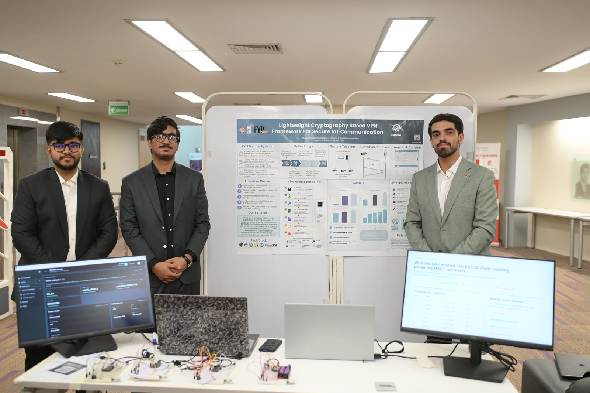
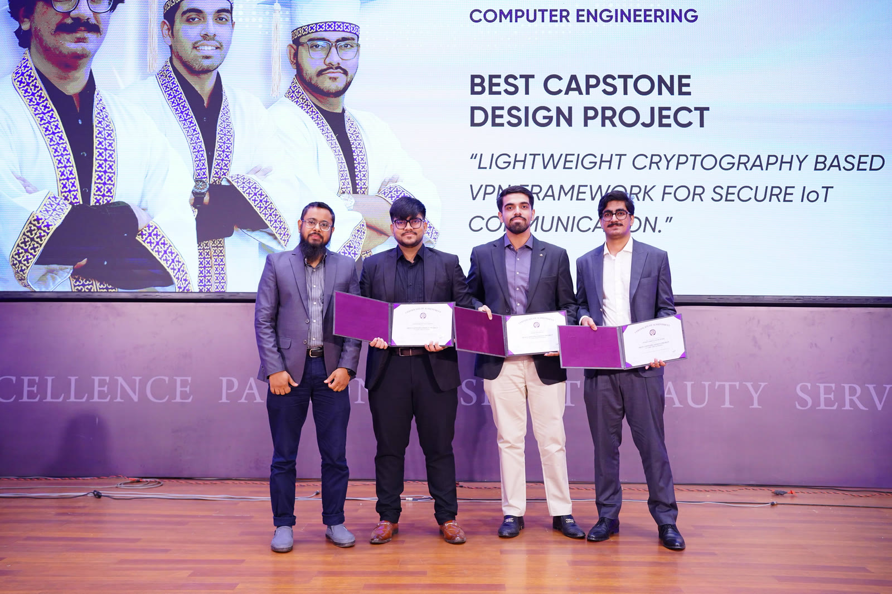

The question
Can constrained devices earn trust?
The project began around a practical problem: connected devices need reliable identity and authentication, but they cannot afford unnecessary complexity or overhead.
AspidIoT began as a question inside a final-year project: how can connected devices establish trust without carrying the weight of an enterprise stack? The answer became a working security framework, then a product direction of its own.
An FYP has a deadline, limited hardware, and no room for vague abstractions. That pressure gave AspidIoT its character: build the smallest trustworthy path from device identity to a secure session, then make every part understandable.
The project began around a practical problem: connected devices need reliable identity and authentication, but they cannot afford unnecessary complexity or overhead.
We shaped the idea around lightweight cryptography, device identity, and a four-step message flow that could be tested on the edge instead of only explained on paper.
Identity request, fresh challenge, proof response, and session confirmation became the spine of Auth-X: a sequence people can inspect, reason about, and build on.
The FYP became the starting point. AspidIoT is now being shaped as a product platform, with Auth-X as its first module and more focused security tools on the way.
The project was not only designed and documented. It was demonstrated as a working system, then recognized by Habib University’s Computer Engineering program for the quality of its capstone design.

The team brought the architecture into the room: a live demonstration of the lightweight cryptography-based VPN framework, its authentication flow, and its connected-device stack.

The recognition affirmed the engineering behind the work and gave the project a stronger foundation to grow from a final-year submission into a product with a longer horizon.
I’m Basil Khowaja, founder of AspidIoT. I’m building practical security infrastructure for connected devices, lightweight enough for the edge and practical enough to earn trust.
Secure-by-design · Open-source mindset · IoT at the edge

Founder / AspidIoT
Turning research-led ideas into focused products for secure communication, device identity, and resilient IoT systems.
AspidIoT is not trying to make connected systems feel heavier. It is about giving the edge the right security primitives, in a form that is focused enough to ship and clear enough to trust.
Every layer has to earn its place on a constrained device.
Identity and freshness come before a session gets to move data.
Good security should be inspectable by the people who deploy it.